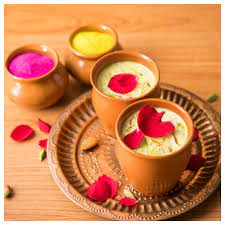
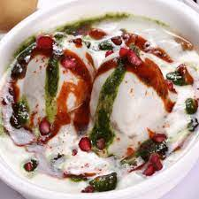
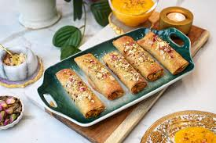

Holi - The Festival Of Colours
Gunjiya is the most popular and must-have desert dish for Holi celebrations. It has been considered part of tradition, at least since the 13th
century. Some historians do believe that Turkish baklava is inspired by Gunjiya. You could call them dessert empanadas, milkfudge handpies, or
turnovers. Gunjiya, also known as Gughara, Pedakiya, Karanji, Kajjikayalu, Somas, and Karjikayi. This is a treat of flaky and crumbly deep-fried
dumplings filled with a sweet mixture of dry fruits, coconut powder, and khoya (milk solids).
Recipe by Chef Ranveer Brar (youtube link)
Recipe by Chef Sanjeev Kapoor (youtube link)

Thandai is a delicious cooling drink made with milk, flavored with nuts, seeds, and spices, and adorned with saffron strands and rose petals. It
is enjoyed in the northern parts of India during the warm summer months, especially on the occasion of Holi. " As a drink, Thandai is believed
to be the drink of the mythological era. "It was the favorite drink of Lord Shiva", said chef and culinary expert Reetu Uday Kugaji.
People often mix bhang with thandai, especially on the occasion of Holi, to make it an intoxicating drink.
Recipe by Chef Sanjeev Kapoor (youtube link)
Recipe by Hebbar kitchen (youtube link)
Bhaang is regarded as tasty and refreshing. It is legal in many parts of India and mainly sold during Holi, when pakoras containing bhang are
also sometimes eaten. A mild preparation of marijuana made from the young leaves and stems of the Indian hemp plant, Cannabis sativa, drunk with milk or water as a fermented
brew or smoked for its hallucinogenic effects.
Recipe by Emami Healthy&Tasty (youtubr link)
Shrikhand is a dish that is mentioned in the 11th-century book Lokopakara by the Sanskrit scholar Chavundaraya, which covers gardening, medicine,
cuisine, and much more. Shrikhand is also mentioned in literature in Mangarasa's 1594 AD manuscript, Supa Shastra: Culinary Traditions in
Medieval Karnataka. Shrikhand is a traditional sweet of the Indian subcontinent made from strained yogurt. It is often served as part of a
thali or with puris. It is a traditional dessert in Gujarati and Marathi cuisine. The curd (dahi) is partially strained through a cloth to
remove the whey and thus produce a solid mass called chakka (the basic ingredient for Shrikhand).
Recipe by Hebbar kitchen (youtube link)
Youtube Recipe

The Mughals and their lifestyle left a strong impact on our palates. It was believed that in the 18th century, the Mughal Khansamas prepared
this delight in the Mughal kitchens using curd, herbs, and spices to improve digestion. Dahi Bhalla is a sumptuous dish made with curd and
some easily available spices and veggies. Yogurt is a slightly sour, thick liquid made by adding bacteria to milk. Here is a simple way to
prepare this delectable and healthy recipe: Drain the dal and transfer it to a grinder. Add asafoetida powder, ginger, green chilies, and salt.
Grind to a smooth batter and set aside. Dahi means yogurt, and vada means fritters (the fried kind), so the literal translation for these is
fritters dunked in yogurt. The base of this dish is vada (fritters) made of Urad dal (split-skinned black-gram lentils).
Recipe by Kunal kapur (youtube link)

Puran poli, Puran puri, Holige, Obbattu, or Bobbattlu, Poley, Bakshamulu, and Boli are Indian sweet flatbreads that originate from Maharashtra.
Puran means sweet filling, and poli means flatbread. Puran Poli (Pooran Poli) is a popular Maharashtrian sweet flatbread with a delicious filling
prepared with chana dal (husked split Bengal gram) and jaggery. The poli (flatbread) is made from a mix of whole wheat flour (atta) and all-purpose
flour (maida). Whole wheat flour is also chock full of fiber, protein, and minerals.
Reacipe by Hebbar Kitchen(youtube link)
This is because the main ingredient, besan, according to various studies, adds protein and fiber to one's diet and helps control cravings as
it takes longer to digest than carbohydrates. Chickpea flour, also known as gram flour or besan, is of great importance in Indian cuisine.
Try besan flour (which is gluten-free) instead of wheat. This also means that it keeps one fuller for longer. Besan is also rich in potassium,
zinc, copper, vitamin B-6, and thiamine. Besan may also help you manage blood glucose levels, facilitate good bowel movements, improve heart
health, and offer anticancer properties. These properties of besan have been observed in several ways.
Recipe by Hebbar Kitchen (youtube link)
Somali Roy. Samosa Chaat. This is a dish that, like the act of melting cheese on anything, would have to try very hard to be bad. It's
made of a base of chopped-up samosas (savory fried pastries filled with spicy potatoes and peas) and topped with chutney, yogurt, and
sev (those thin fried potato bits). A small triangular pastry filled with spiced meat or vegetables and fried in ghee or oil. In short,
samosa chaat is made when samosa is broken into bite-sized pieces and served with masala, chutney, and spices. Even though it's amazing
street food, it can also be made at home.
Recipe by Hebbars Kitchen (youtube link)